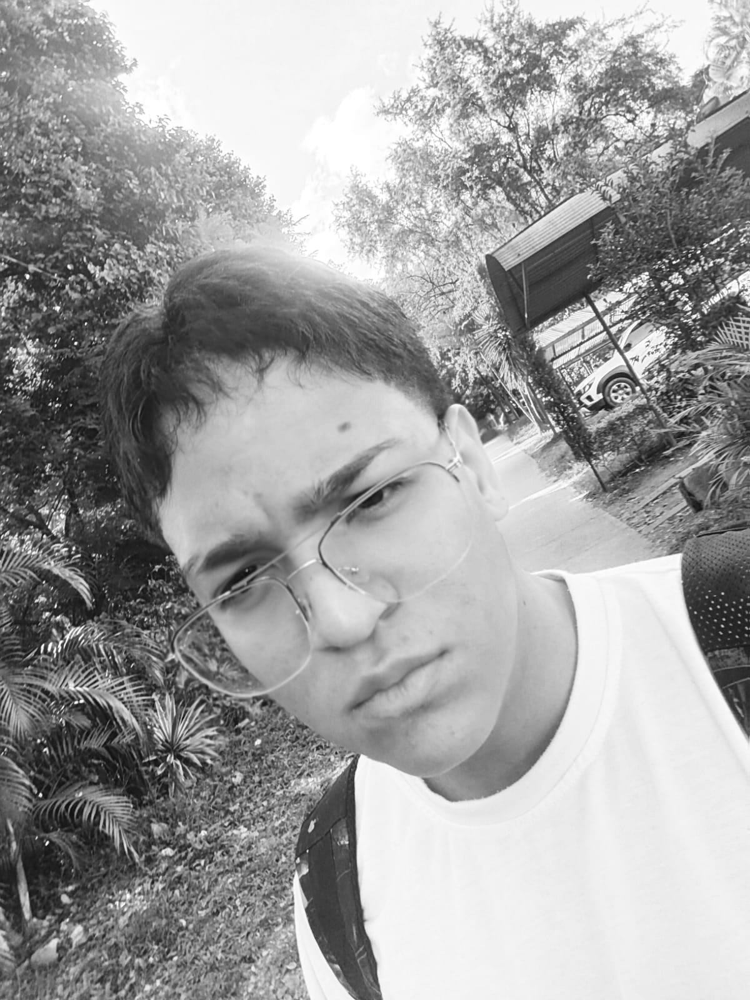

SOBRE MI
Mi nombre es Sebastián Brunal, tengo 18 años, vivo en Bello Antioquia,vivo con mis padres y mi prima, yo tengo una mascota que es una perra llamada Fiona,actualmente me encuentro estudiando en bachillerato en el grado 11 y estudio inglés en las tardes
Desde niño le didique muchisimo mas tiempo de lo normal, era arquero, ahora solo lo juego por hobbie pero me encanta
siempre me ha gustado jugar y divertirme en los videojuegos
debido a que me apasiona aprender y saber que cada dia mas se una cosa diferente
| Mañana | tardes | noche |
|---|---|---|
| voy a estudiar a las 6 y llego a casa a las 9 | preparo todo lo que tenga que hacer en la tarde | estudio programacion |
| intento aprovechar el tiempo y estudio lo que tenga que estudiar | voy a estudiar ingles | termino clase y me pongo a jugar video juegos |
como lo pueden imaginar son mi familia, las personas que mas amo en el mundo, la cual en si son todo para mi,son tanto mi inspiracion como mis ganas de salir adelante,a ellos les debo absolutamente todo